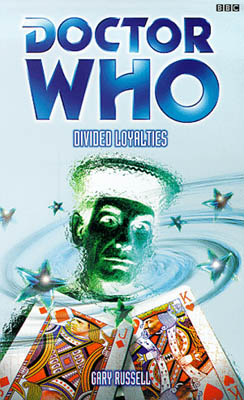

|
Divided Loyalties
|
BASIC PLOT DOCTOR There's also a lengthy flashback to the First Doctor (although beyond the odd 'Hmm?', he's apparently played by Peter Davison). COMPANIONS MATERIALISATION CIRCUIT The TARDIS is moved around from pillar to post by the Toymaker, but this isn't materialization as such, and most of the places are various locations within the dreamscape anyway. Pg 235 The TARDIS comes and picks the Doctor and friends up, then rematerializes on the Little Boy II. PREPARATORY READING CONTINUITY REFERENCES Pg 1 "He [The Doctor] rarely needed sleep" as commented on numerous times, most notably in The Talons of Weng-Chiang "As Pudding Lane fell victim to flame and cinder..." The TARDIS has just left London, 1666, where the TARDIS crew were instrumental in starting the great fire of London. The Visitation. But see Continuity Cock-Ups. "An original Jackson Pollock was attached to the door with chewing gum. Hey Doc was scribbled in the corner, Happy times and places, J." 'Happy times and places' was how 'the Doctor' used to sign off in his editorials in Doctor Who Weekly, many years ago. Pg 2 Mention of Romana. "The Doctor currently wore white pyjamas, with tiny question-mark motifs sewn onto them." All the Doctors from fifth to seventh wore question-marks somewhere on their person (and the eighth was rumoured to have that particular insignia on his boxers, according to Seeing I). The seventh Doctor wore blue pyjamas with question-marks on them in the short story 'Question Mark Pyjamas' (see page 346 of Decalog 2). Pg 10 "'I've recently upgraded his receiver to digital,' the mandarin figure muttered." There is no excuse for this joke. Pg 11 "Only moments had passed since he and the stranger had been sitting there, playing the infernal hand that had resulted in this phantasmagoria." Phantasmagoria is the title of a Doctor Who audio (head honcho, Gary Russell) which featured gaming and gambling in much the way this section of this book does. Pg 17 "Little Boy II didn't possess any armaments, bar a gravitron to deflect meteors and any other debris." A gravitron was seen in The Moonbase, while deflection of meteors etc was seen to occur in The Wheel in Space. Pg 23 "'It's not Heathrow, is it?' 'No' 'It's not even Earth, is it?' 'No' 'Twentieth Century?' 'No'" The Doctor spent most of Season 19 trying to return Tegan to Heathrow in 1981. And even when he finally gets her there, she's not particularly grateful (Time-Flight). Pg 24 "Then, after an accident he changed, literally before her eyes, into a younger blond man who liked cricket." Logopolis On Nyssa: "Her parents were dead. Her stepmother was dead. Her entire world had been consumed, obliterated and she was the only survivor, anywhere. And what did she do? Shrug it off, wallow in scientific books to learn more about something called 'telebiogenesis' which she claimed to be ignorant of." Tegan's uncharitable and out-of-character (as regards her opinions of Nyssa, anyway) personality assassination includes references to The Keeper of Traken, Logopolis and, as regards books on telebiogenesis, Castrovalva. Nyssa is not actually the only survivor of Traken, as Cold Fusion makes clear that there is a Trakenite colony on Serenity. Let's be charitable and assume that, although Nyssa knows this, Tegan does not. Pg 25 features far more information on Adric than I ever care to know. Suffice it to say I am glad that I cannot find another reference anywhere on the state of Adric's bodily odour. Pg 27 "The Doctor, who seemed content to ramble around the twelve (at least) galaxies at the mercy of the TARDIS's apparent whims." Kane offers to show Ace the wonders of the twelve galaxies in Dragonfire. Describing Adric as 'waddling' appears a tad harsh. Pg 31 "'Pirates?' mouthed Townsend. As in The Space Pirates. "Well you see whereas on Traken your union only stretched through five or six planets in your own solar system." The Traken Union was mentioned in The Keeper of Traken and utterly obliterated in Logopolis. Pg 32 The Doctor quotes "Now I have become Death. The Destroyer of Worlds" in response to the name of the Little Boy II. The quotation is from the Bhagavad Gita, and was in turn quoted by J Robert Oppenheimer, the inventor of the nuclear bomb in response to his invention. The reason all this quoting is going on is that 'Little Boy' was the name of the bomb dropped on Hiroshima in 1945. Tegan's failure to recognize it (and misattribute it to Keats, Wordsworth or Shelley) is quite sad, actually. It's also an unused Babylon 5 reference (the original title for Season 3). Babylon 5 references will pop up later on. Pg 34 "'I had a model kit of one of these once, you know,' the Doctor continued. 'Lost the umbilical to the scout ship, though. Broke off, I suppose. Nothing lasts...'" The Doctor making airfix models is quite appealing and ties in with his wish to be a train driver in Black Orchid. Losing bits of models will cause a rise in sympathy from anyone who owned any Star Wars merchandise. "Tegan thought it was quite a good description of the TARDIS - she'd not been travelling in it for more than a few weeks now, and she certainly didn't understand it." This is consistent with the fact that much of the season 19 stories run into one another. However, Deep Blue suggests Tegan has been with the Doctor for two years, meaning there are possibly lots more adventures that we haven't seen subsequent to this one. "Tegan, have you been messing with the TARDIS controls again?" She did this in Castrovalva and Four to Doomsday, and would go on to do so again, unwittingly, in Snakedance. Pg 35 "The Doctor pocketed it and reached out towards the TARDIS. He whipped his hand back suddenly. 'A force field!' he exclaimed." This is the same way the Toymaker kept the Doctor's TARDIS from him in The Celestial Toymaker. Pg 37 "Meanwhile the boys impatiently joking about tits and bums, completely ignorant of how their own bodies were changing in more subtle but, to the girls, equally obvious and far less attractive ways. God, their skin, their hair. Their breath!" Once again, this is far too much information. There's a real boy-hating thing going on as undercurrent in this book. Or is it girl-hating? I actually can't tell. "Tegan Jovanka knew central Brisbane backwards." and she mentions the place in Logopolis and Castrovalva at least. Pg 39 "I fought off the Mara. I can deal with you." Actually, no, you just gave it to someone else, but let's not quibble here. Whatever she did, she did it in Kinda. Pg 41 "As if to confirm this, Nyssa brought out from behind her a small rectangular box with a nozzle on it. The ion bonder she had used to help the Doctor on Castrovalva." How nice when the continuity reference explains itself. "Adric meanwhile undid the rope belt around his waist and started making a lasso of it." This was given him by his brother, Varsh, in Full Circle, before he died tragically. Pg 47 "Whatever phantom zone she had found herself in, she would conduct herself with all the strength of a true daughter of Hull." All right, I didn't mind the 'epileptic disco' line as much as some (but if you must know, it's on page 23). This line, however, is certainly a contender for the worst line in a Doctor Who novel (and possibly in literature in general) ever. What, exactly, was Russell trying to achieve here? And why? Pg 51 "(Nyssa had promised to go through the TARDIS wardrobe with her soon so that they could both choose something new to wear instead of forever getting the TARDIS to work its overnight magic on her lilac air hostess outfit.)" From Arc of Infinity, the girls change their costumes regularly, and then in Terminus, Nyssa removes most of hers. Pg 52 Nyssa mentions that Traken was in Mettula Orionsis, as stated in The Keeper of Traken. "Nyssa shrugged. 'It was destroyed. The whole constellation. By the man in my father's body.'" Paladopous still doesn't understand, but Adric leaps to the rescue: "'The Doctor's oldest enemy, the Master, killed Nyssa's stepmother and then absorbed her father because he was dying.' 'Who, her father?' 'No! The Master, of course. He needed a new body and he used the power of the Source on Traken to merge with Tremas and thus rejuvenate. Then later, when he attempted to take over the universe, he used entropy to completely wipe out the system Nyssa comes from. She's the only survivor.'" A fair summary of The Keeper of Traken. A not totally accurate summary of Logopolis, since the destruction of Traken was not specifically planned by the Master. And clearly Adric hasn't heard about the Trakenite colony on Serenity (mentioned in Cold Fusion) either. Pg 53 "I'm not sure how much of my father is still there or whether he's 100 per cent the Master now. I once asked the Doctor if there was any way to separate them, get my father back." While the Doctor never clearly answered her theory, Nyssa is still thinking about this as a possibility at least by Goth Opera, and possibly beyond. "When I close my eyes at night, I see him, my mother, Kassia, the Keeper, all of them in the garden on Traken." A quick cast-list of The Keeper of Traken. "'I'm an orphan too,' said Adric. [...] 'Yes, and I'm from another universe entirely. My parents are dead, my people are really spiders grown inside river-fruit. It's great where I come from.'" Full Circle, simplified for the under fives. "'And the Doctor was different then, too. Much older-looking. It's funny - as he gets older, he becomes a younger man.' He grinned at Paladopous. 'Isn't life odd?' He finished off his food. 'Anyway, I preferred the old Doctor.' 'Adric!' 'It's true, Nyssa. It was just him and me for ages. We had adventures and everything.'" Incredibly, Russell manages to make Adric sound more petulant than he appeared on screen. A harsher man than I might suggest that, if the Doctor and Adric traveled alone together for ages, this might well explain his eagerness to incorporate Tegan and Nyssa into the crew, and also might explain, if he thought there was no other option left, his letting go of that metal strut on the Pharos Project in Logopolis. Pg 54 "He wasn't in the station anymore - he could feel a wind and see leaves rustling on the trees. And rolling along towards him was a river-fruit. He was home - on Alzarius!" He's not, but it's not a bad impersonation. "He whirled around - the voice, it was... it was Varsh. His brother! And there were his parents, Morell and Tanisa! But weren't they dead?" We saw Varsh in Full Circle, and Adric's parents were mentioned, although not seen in 'A Boys Tale' in Short Trips: Companions. "'Come home, Adric,' they said in unison. 'We need you here. The Starliner needs your mathematical excellence.'" For which he has a badge. "He turned and saw Deciders Draith and Garif staring at star charts" Both appeared in Full Circle. "It was Jiana, his old friend. He had grown up with her, but she had run away from him when he said he wanted to be a Outler, a rebel, like Varsh." We meet Jiana in 'A Boys Tale' (Short Trips: Companions) and the Outlers in Full Circle. "'Adric, you are so brave, so clever. You've done all those things. Beaten the vampires, saved the Tharils, fought the Master, trapped the Ferutu and even burned up the Terileptils and their plague rats.'" Deep breath: State of Decay, Warriors' Gate, Logopolis and Castrovalva, Cold Fusion and The Visitation. It seems Jiana couldn't think of anything positive to say about Adric's behaviour in Four to Doomsday, which is not all that surprising. Pg 55 "Ever since Romana and K9 had stayed in E-Space, it had just been the Doctor and him." Warriors' Gate. Adric has a charmingly idealistic self-image: "Armed with the Doctor's guile and cunning matched with Adric's charm, wit and mathematical skills." He misses the Fourth Doctor. Pg 56 "Adric knew he had often been suckered into other people's plans. At least, he knew that's how the others thought of it. But no - he always had a plan. He always pretended to go along with people, ready to switch back to the Doctor at the last minute." State of Decay and Four to Doomsday at least. Pg 57 The Toymaker: "Oh no, Adric. No, I am far more than just a Time Lord." This line is from a cut scene from Remembrance of the Daleks. "'I don't think we're on Alzarius any more...'" is a misquote from The Wizard of Oz. Much of the conversation between Adric and the Toymaker, although he doesn't remember it at first, may lead into Adric's wish to return home, expressed in Earthshock. Pg 63 "The creature dropped the white pieces to the ground and instantly the far end of the chess-board meadow was filled with them." Much of the imagery here and elsewhere is based on 'Through The Looking Glass' by Lewis Carroll. Pg 66 Tegan on the TARDIS: "Still, try it. You never know, maybe it'll accidentally take us to Heathrow." She's still trying to get there. Pg 68 "Adric almost stamped in frustration. 'Tegan's always being possessed! She just wants attention.'" Not entirely fair (it's only been Kinda so far) but very petulant. Pg 71 "Now he knew it was just the science of the Toymaker - the magicks of the Great Old Ones." The Great Old Ones were grafted into Doctor Who continuity from the Cthulhu mythos originally by Andy Lane in All-Consuming Fire. There were similar appearances in The Pit, Millennial Rites and, less clearly, White Darkness. See below for more information. Pg 76 Mention of Traken, and Tegan's job as an air hostess. "'You'll notice there are two small stumps on either side of the pyramid,' she said. The Doctor looked and nodded. 'I recognize this. Somewhere in the back of my mind, I recognize this.'" I recognized it. It's a big version of the Trilogic Game from The Celestial Toymaker. Pg 82 Adric's total misunderstanding of how utterly annoying he is is sad in a Schadenfreude kind of way. "He'd make jokes - asking for the sodium chloride instead of salt at meal times, educated sort of quips like that." He does this in Four to Doomsday. Pgs 82-83 show Adric preparing the co-ordinates to travel back home to Alzarius and plot a course through the CVE, as he announces he has done in Earthshock. Of course, he doesn't know that K9's already done this (Blood Harvest). His brillaint plan involves... reversing the coordinates. Pg 83 Mention is made of the Casseopeian CVE, the very system that the Pharos Project was pointing at in Logopolis, and the CVE that the Doctor stabilized. "Tegan had heard the Doctor mutter something about wishing he had brought Theseus." This is a reference to the maze which contained the Minotaur, and, as such, may reference The Time Monster, The Horns or Nimon or even The Mind Robber. As far as we know, the Doctor has never met the real Theseus. Pg 84 "Tegan wasn't particularly religious but when her mother had told her that her father had cancer and had to retire from running the farm and let Richard Fraser, her uncle, take over, she had cast a small prayer upwards." Tegan's cousin, as seen in Arc of Infinity, is called Colin Fraser, so her uncle's name is consistent. It's only slightly annoying that, in the context of the emotion of the sentence, we don't need to know it; it's only there to say 'Ooh, look, I got the continuity right.' Pgs 84-86 show an illusion of the funeral of Tegan's father, which she is unable to attend due to the fact that the Doctor can't get her home. This is all very well, but The Sands of Time (Pgs 130-131) make it absolutely clear that Tegan's father is already dead. Let us be charitable and assume that the Toymaker wasn't far off the mark, and that Tegan finds out about her father's death (and may even attend the funeral or see him before he dies) in the gap between Time-Flight and Arc of Infinity, which is why she suddenly has a thing about seeing her family over the next few stories. There's actually, then, even more justification for her to need to talk about it in The Sands of Time. Pg 85 features other members of Tegan's family including Colin Fraser from Arc of Infinity. Aunt Vanessa (Logopolis) gets a mention as does Grandad Verney (The Awakening). Explanation is also given as to why Tegan has such an unusual surname for an Australian - her grandparents were Serbian. Pg 86 Tegan's family are jewish. Didn't know that. Pg 91 "The figure that stood there was upright, arms clasped behind his back. He wore the recognizable robes of the Prydon Academy, where the Doctor had studied as a young man on his home planet of Gallfrey." Indeed. The Prydonians, and other colleges, are introduced in The Deadly Assassin. Pgs 95-155 are an extended flashback to the Doctor's Academy days, and feature more continuity and cameos than you could possibly want. I've probably not got all of it. Fortunately, the characters, at least, are explained on Pgs 247-249. Ah, well. Here we go. A long time ago, in a galaxy far, far away: Pg 95 "'I'm not convinced, you know,' said Koschei." This is the Master. He was established as having been called Koschei in The Dark Path. "Above them, the dark orange blanket that was Gallifrey's night sky was punctured by occasional bright lights. Artificial satellites. Or time ships breaking through the transduction barrier." Gallifrey's night sky was said to be orange in The Sensorites and was seen to be orange (although at day time) in The Invasion of Time. Transduction Barriers were introduced in The Invasion of Time. "He looked around at the Deca, as they called themselves. Rallon. Koschei. Drax. Mortimus. Magnus. Ushas. Jelpax. Vansell. Millennia. And himself. The pinnacle of their class - the pride and joy of teachers such as Sendok, Borusa and Franilla." OK. In order: Rallon is new, Koschei I've mentioned, Drax is from The Armageddon Factor (and may or may not be the auctioneer in Alien Bodies), Mortimus is the Meddling Monk (The Time Meddler, The Dalek Masterplan and the NA Alternate Universe cycle concluding with No Future), Magnus is the War Chief (The War Games, Timewyrm: Exodus), Ushas is the Rani (The Mark of the Rani, State of Change, Time and the Rani, Dimensions in Time (!)), Jelpax is new, Vansell appears in a number of audio adventures beginning with The Sirens of Time, Millennia is new and you all know who the Doctor is. Sendok and Franilla are new, while Borusa was first introduced in The Deadly Assassin, appeared in The Invasion of Time and Arc of Infinity, and was turned into stone in The Five Doctors. He has been destonified in both The Eight Doctors and Blood Harvest, which causes no end of confusion. Pgs 95-96 The Capitol "sprawled over twenty-eight square miles of Gallifrey's surface, surrounded on all sides by the horizon-stretched desert plains where the Outsiders lived, rejecting the conformity of Gallifreyan society." We see the Outsiders and their beliefs in The Invasion of Time. Pg 96 "Or rather, Time Lord society, administered by those lucky few who were honoured with the ability to live for ever - barring accidents. Well, thirteen lives seemed like for ever to him." The phrase 'live for ever, barring accidents' was used by the Doctor to describe his people in The War Games. Thirteen lives was standardized later (as late as The Deadly Assassin, actually). "All but three of the Deca were on their first regenerations and were forbidden to regenerate, should the whim take them, until after their five-hundredth birthdays. If Gallifreyans could be said to have birthdays. Vansell, Ushas and Rallon had already become junior Time Lords and were now in their final semesters, whereas the rest still had two to go before they received the Rassilon Imprimature - the genetic coding that gave them their regenerative powers, the ability to withstand time travel, the telepathic connection to TARDISes, time rings and all the other transtemporal feats of Gallifreyan engineering." The Rassilon Imprimature was introduced in The Two Doctors, Time Rings in Genesis of the Daleks. But see Continuity Cock-Ups. In a big way. On Drax: "Oh, Drax was bright enough. A genius in fact with all things mechanical - they always said that if you gave Drax eight unconnected objects, he would find a way to put them together and make a TARDIS dematerialization circuit, or a chameleon circuit, or even a food synthesizer." The Third Doctor had issues with his dematerialization circuit, the chameleon circuit has never or rarely worked properly and the food synthesizer appeared early in the black and white stories and often in books since. But you knew all that. "'Let's head into the relic room. Find the hand of Omega or Pandak's staff or Helron's... ' but Drax's enthusiasm was cut short." The Hand (note the lack of capitalization of 'hand' in the book) of Omega appeared in Remembrance of the Daleks, Lungbarrow and The Infinity Doctors. Pandak III was one of Gallifrey's longest serving presidents (The Deadly Assassin) and there is a statue of him in the Panopticon according to The Ancestor Cell. Helron, to the best of my recollection, is new. Pgs 96-97 "Koschei shrugged. 'OK, let's go and play with the President's cat - oh no, we can't! Ushas' little experiment put paid to that!'" Ushas, later the Rani, owned giant mice, which ate the President's cat, according to The Mark of the Rani. Pg 97 "'Hey, Thete.' Drax said [...] 'Please, Drax, don't call me Thete, Theta, Theta Sigma or anything else, all right? You know I don't like it.'" Drax's nickname for the Doctor was first given in The Armageddon Factor. "'Azmael is far too busy to help us,' interjected Millennia.'" We met Azmael in The Twin Dilemma. And may my bones rot for having watched it. Pg 98 "'No,' gasped the Doctor. 'No, that would be... wrong!'" This hysterically bad line sounds far too much like Faith pretending to be Buffy in the Buffy episode 'Who Are You?' that I couldn't let it slip by without a mention. "'Within a couple of weeks, he'll have forgotten about the relics and be far more interested in those new Type 30s the Time Lords are testing.' Mortimus was beside them in an instant, rubbing his pudgy hands in anticipation. 'Mark Ones or Twos?'" This clearly dates the history back a long way (remember that the Type 40 the Doctor stole was old and dilapidated even then) and kind of tidies up the problem in The Time Meddler that the Monk refers to 'marks' of TARDIS, and yet later we discover they come in numbered 'types'. It doesn't, of course, explain the fact that The Time Meddler clearly states that the Doctor and the Monk have never met before. We'll put that down to the First Doctor's amnesia again (as suggested in Time and Relative, although a fan theory long before that), shall we? Pg 99 There's a whole kissing-relationship thing going on between Rallon and Millennia, which kind of ties in with Cold Fusion and the Telemovie. Really glad that Russell didn't write a sex scene, though. "The cardinals took a dim view of students who failed to get the required amount of sleep." It's implied in most other books and a fair chunk of the programmes that the Doctor doesn't need to sleep very often, and certainly not nightly. Perhaps the Rassilon Imprimature introduces a permanent state of insomnia. Runcible, from The Deadly Assassin, puts in a cameo appearance. Pg 100 "They were recorders. From the Celestial Intervention Agency." The Gallifreyan CIA were introduced in The Deadly Assassin, but can be retconned back throughout much of the Doctor's active life. There is little excuse for breaking up this sentence into two. Pg 101 "He smiled at the second recorder. 'Our target must not be disturbed after all. The seventh door has been activated, the Matrix secrets revealed. He has a destiny that we must not interrupt. Yet.'" The Seventh Door to the Matrix was visited during The Trial of a Time Lord. The Doctor's destiny is unclear, but the CIA are clearly using him, even now. His 'destiny' may tie in to something that the Chancellery Guard were talking about in The Infinity Doctors ('Rassilon was quite clear that the Doctor must only be killed after...') but I doubt it does, as this seems far too simplistic. Pg 102 "You'll find someone one day, Doctor. Then you'll remember this ridiculing and regret it, mark my words." The Infinity Doctors implies that he did (although it depends how and when you choose to take The Infinity Doctors) and then lost them. "They both stopped as the Doctor pushed his door open and a seven-foot-tall furry creature faced them. If had a pig-like snout, two black eyes with red specks in the pupils and curled horns on either side of its head. Its powerful frame was covered in downy white fur threaded through with charcoal grey stripes and its massive clawed paws were resting on its hips. It was an Avatroid." This is Badger, who we first met in Lungbarrow. He also appears in the audio Unbound: Auld Mortality. Pg 103 "'Rallon,' the Doctor said between short breaths, 'this is Badger, my... friend from the house of Lungbarrow.'" The Doctor's ancestral seat, as initially mentioned in Cat's Cradle: Time's Crucible and visited in Lungbarrow. Pg 104 "Tomorrow is Otherstide, Snail. It is also your name day. Two important events you are expected to celebrate." Otherstide was mentioned in Lungbarrow, as was the fact that it was the Doctor's name day. The Doctor's nickname of 'Snail' also comes from that book and refers to the fact that he has a navel. Mention of Quences, the Kitriarch of the House of Lungbarrow. "'And I am the Doctor, thank you. Not "Snail". Not "Wormhole". Not "Thete". Doctor!'" Actually right now he sounds more like Adric. 'Wormhole' was another navel-related name in Lungbarrow. "'Ordinal-General Quencessetianobayolocaturgrathadadeyyilungbarrowmas insists that you...'" Yep. That was his name in Lungbarrow too. Envelopes on Gallifrey must be enormous. Pg 105 "The Deca - one, Runcible the fatuous - nil." The Doctor reminds Runcible of this nickname in The Deadly Assassin. Pg 106 "... starting in the Alys system and ending up back at Kasterborous." 'Alys' may be a reference to Alice, as in Lewis Carroll, as the Alice books are among Russell's favourites and are frequently referenced throughout this one, not to mention the audio 'Zagreus'. The Constellation of Kasterborous is where Gallifrey is. "Sendok shook his head slowly and carried on with his lecture, asking an off-world student, a Gresaurus, to answer the problem he had set." The original plan for Ace's departure in Season 27 was to have her enroll at the Time Lord Academy, so off-world students at the Academy does have a precedent. That said, everything in the Who mythos before this suggests one Academy, not one per order, so there's still something wrong going on. Pg 107 "Unlike most of the casually dressed lecturers or students, Delox always wore her full heliotrope robes and neck brace." So she's one of the Patrexes, then, as revealed in The Deadly Assassin. Heliotrope, as a gemstone, is apparently green with red spots. As a colour, not a gemstone, it may well be dark red - everyone seems unclear. I wonder how many people can actually picture someone in heliotrope robes with any level of accuracy. I'm not entirely certain why one of the Patrexes is teaching at Prydon Academy; wouldn't she teach at Patrex Academy? Pg 108 "Magnus shrugged. 'Apparently they threatened to imprison the Aliens' world behind a forcefield and then run time backwards, erasing them.' Jelpax nodded excitedly. 'It's true. The Time Lords said the Aliens would not only cease to exist but they'd never have existed. I saw it in one of the record books in co-ordinator Azmael's library.'" Azmael from The Twin Dilemma again. These are the Aliens from The War Games. Pgs 108-109 "'You and your arrogant young friends seem to have forgotten everything instilled in you since the Loom.'" All Time Lords are loomed, as we see in Lungbarrow. The Doctor remembers his looming in Human Nature. Pg 109 "Delox returned her attention to the still standing Doctor. 'And you. You in particular have got away with a great deal in this Academy. You stand there, thinking you are clever, educated and intellectual. You believe your desire to escape your home world makes you unique. Worthy of special attention. You are wrong. You are nothing. Your work is patchy, your attendance more so and even your appearance is a disgrace. You believe that getting a few high marks, a few eight out of tens from Cardinal Borusa, means you no longer have to work so hard, that you can relax.'" That, at least, explains how the Deca (which includes the Doctor) can be the pinnacle of academic achievement and yet the Doctor can make such a mess of his exams as revealed in The Ribos Operation. The 'eight out of ten' thing from Borusa is from The Deadly Assassin. Pg 111 "He [The Doctor] suddenly turned and looked back up the mountain, staring at a small hut where, presumably, one of the Outsiders lived. There was no one there, but the Doctor waved anyway and then carefully placed the flower in a pocket." The hut presumably belongs to K'Anpo Rinpoche - the Hermit up the mountain that we met in Planet of the Spiders - who, presumably, given what happens next, has just given the Doctor some really bad advice. I'm surprised the Doctor remembers him so fondly. The Doctor has spoken of how he often spent time with his hermit friend (The Time Monster), so this is presumably one of many visits. The flower may well reflect the perfect fractal flower of Timewyrm: Revelation. This is the point at which the continuity ceases to be gratuitous and becomes annoyingly gratuitous - it doesn't just add nothing to the plot, it actually detracts from it as things become self-contradictory or just plain wrong because of the desire to get every possible continuity link in that can be done. Someone should have been editing these books. Pg 112 The flower is a daisy, as mentioned in The Time Monster. Pg 113 Mention of Logopolis "The Doctor looked hard at him and, for the second time in less than a day, Rallon saw that look in his eyes. A look of fire. Of danger. Of something not quite... Gallifreyan. Not normal." Ah, but he's more than a mere Time Lord, isn't he? Silver Nemesis. Pg 115 "The three with the data pad were like time-tots with new Otherstide gifts." Time-tots were mentioned in Shada. Otherstide was mentioned in Lungbarrow. Reference is made to the Doctor's fascination with the planet Earth. Pg 116 "'What do you make of this, then?' The Doctor was tapping at the data. 'Ever heard of Minyos?'" Underworld Mention is made of the APC net - Amplified Panatropic Computer, as introduced in The Deadly Assassin. "Mortimus was scanning. 'A race of people in suspended animation as a result of a gamma war... two identical planets of different sides of the universe, neither knowing about the other but with identical populations and culture... a water planet in which life exists in huge cities floating in the skies, kept there by the mental powers of its inhabitants... a city built around a vast weapon to hide it... Cybermen... Daleks... the Giant Vampires...'" Some of these sound familiar: the first almost like the conclusion of The Highest Science, the second like ideas for Hidden Planet, but magnified (or possibly a completely different explanation for the planet Ravolox in The Trial of a Time Lord, but probably not), the next one I'm not certain of, the fourth sounds like Colony in Space, and we know the last three. Quite why these are Time Lord secrets, I'm not certain. They may also (I speculate) be references to famous works of science-fiction. Pg 117 "THE RECORD OF RASSILON: THE GUARDIANS OF THE UNIVERSE" This is clearly a different part of the same Record of Rassilon that the Doctor unearths in State of Decay. (Clearly the Time Lords became less secretive about their history since this time, as all Type 40s have the Record of Rassilon stored on board.) "THE UNIVERSE IS IN A CONSTANT STATE OF FLUX - AND IS ESSENTIALLY BALANCED BY THE COSMIC POWERS OF THE GUARDIANS. BEINGS SUPERIOR TO EVERYONE" This is pretty much what the White Guardian says at the beginning of The Ribos Operation. "RASSILON ONLY KNEW OF TWO GUARDIANS - LIGHT AND DARK, GOOD AND EVIL, BLACK AND WHITE" And these are the two Guardians we've come across in The Ribos Operation, The Armageddon Factor and Mawdryn Undead, Terminus and Enlightnment. "BUT RASSILON WAS AWARE THAT THERE MAY BE OTHERS. BEINGS FROM ANOTHER UNIVERSE, COME TO EXPLORE, INVADE OR COLONISE OUR OWN. HE DEFINED THEM AS SUB-GUARDIANS - FOR MANY WERE THE CREATURES THAT CAME UNTO OUR UNIVERSE AS IT WAS BORN OR AS THEIRS EXPIRED. AND RASSILON NAMED THE SUB-GUARDIANS 'THE GREAT OLD ONES'" This is consistent with All-Consuming Fire, although quite why the Guardians and the Great Old Ones are being tied together here isn't terribly clear. Does that mean the Guardians are Great Old Ones as well? The Great Old Ones as defined in All-Consuming Fire were creatures who jumped from their Universe as it collapsed before the Big Bang in ours, and jumped into this one. In their Universe, the Laws of Physics worked differently, and so they appear to have amazing powers in this Universe. "SPECULATING THAT MAYHAPS THEY WERE TIME LORDS FROM THAT OTHER UNIVERSE, FAR MORE ADVANCED, FAR FURTHER EVOLVED" This makes sense - Time Lords from the end of their Universe, as opposed to those from the beginning of ours, such as Rassilon. This is similar to the bottle universe theory from Dead Romance, Interference and The Ancestor Cell. "AND RASSILON GAVE THE GREAT OLD ONES NAMES AND WARNED ALL FUTURE TIME LORDS TO BE ON THEIR GUARD AGAINST THEIR EVIL, THESE MALEFICENTS: HASTUR. YOG-SOTHOTH. SHUB-NIGGURATH. CTHULU [sic]. MELEFESCENT. TOR-GASUKK. GOG AND MAGOG. LLIOGOR. NYARLATHOTEP. DAGON. AND FINALLY THE THREE CHAOS-BRINGERS WHO SOUGHT EQUIVALENTS IN OUR UNIVERSE: RAAG, NAH AND ROK" Deep breath. All-Consuming Fire made the following links: Hastur the Unspeakable now calls himself Fenric (The Curse of Fenric). Yog-Sothoth is also known as The Great Intelligence (The Abominable Snowmen, The Web of Fear). Cthulhu (Russell does not spell it as HP Lovecraft did) is the Old One in White Darkness (although it's only All-Consuming Fire that confirms this). Lliogor is said to have settled on Vortis, and so is presumably the Animus (The Web of Fear, Twilight of the Gods). Nyarlathotep, the Doctor hopes never to encounter. Dagon was worshipped by the Sea Devils. The Gods of Ragnarok caused chaos (it would seem) by building the Land of Fiction (Conundrum, The Mind Robber) and appeared in The Greatest Show in the Galaxy. Synthespians™ also suggests that the Nestene Consciousness is the offspring of Shub-Niggurath (Spearhead from Space, Terror of the Autons, Rose). That said, the following that are on this list, but not the one in All-Consuming Fire are not Lovecraftian: Melefescent and Tor-Gasukk seem to have no external source. Gog and Magog have appeared in the DWM comic strip and are mentioned on page 95 of Citadel of Dreams. Note that this is the only place in the Who mythos that splits the Gods of Ragnarok into three separate names. Note also that this is the only mention of any of these Great Old Ones apart from the Toymaker (who is not even mentioned in this list) in this book, which is therefore another case of mentioning continuity for the sake of mentioning continuity. Pg 118 "BUT RASSILON QUESTIONED, DID ALL THOSE GREAT OLD ONES HAVE A ROLE TO PLAY IN OUR UNIVERSE? AND WERE THERE MORE GUARDIANS? A GUARDIAN OF JUSTICE? A GUARDIAN OF MORTAILITY? A GUARDIAN OF IMAGINATION?" Some, admittedly fairly wild, fan speculation has suggested that the Doctor may be the Guardian of Justice. "DID A SILICON LIFE FORM SEE THE BLACK GUARDIAN AS A MONOLITH?" Silicon-based life forms appear in The Hand of Fear, The Stones of Blood and Slipback. "TAUGHT HIM THAT AMONGST EPHEMERAL BEINGS, THE TIME LORDS OF GALLIFREY WERE SUPERIOR, BUT THERE WERE THOSE MORE SUPERIOR THAN THEM" The Eternals in Enlightenment referred to those with life-spans, who did not live forever, as 'Ephemerals'. Pgs 118-119 "LATER TIME LORDS REFER BACK TO THIS LIST WHEN DISCUSSING A BEING, OR BEINGS - THE DIFFERENT ACCOUNTS ARE INCONSISTENT - KNOWN AS THE TOYMAKERS. Mortimus was nodding excitedly as he read on. 'Yes, yes, yes. A being - or beings, if you like - of vast mental powers who could build and destroy entire realms with his mind.'" This is almost word-for-word how the Doctor describes the Toymaker in The Celestial Toymaker. Pg 120 "There was a time when Gallifrey explored. Look at Minyos. Look at the Death Zone. Look at the early days of Gallifrey when explorers in nothing more than scaphes ventured into the vortex." What great examples to select to demonstrate what a good idea it is to go out into the Universe: The Minyan civilization all-but destroyed itself due to Gallifreyan intervention, while the Death Zone was the Time Lord equivalent of the Gladiatorial Combat pit in Ancient Rome. The scaphes bit, at least, has a point. We witnessed this in Cat's Cradle: Time's Crucible. Pg 123 "'You don't know how to fly this thing, do you?'" is also something that Tegan's said to the Doctor on more than one occasion. "Rallon laughed. 'I'll check the fault locator'" We saw the TARDIS's one of these in The Daleks and The Edge of Destruction. There is a fault locator room, much as there was in the early black-and-white stories. More mention is made of different types of TARDIS, including the Type 18, Type 35 and the Type 30 Mark III. That's impressive considering that the Time Lords were only field-testing the Type 30s yesterday evening. (Pg 98) The Doctor: "'As usual, I have to do everything, hmmm?'" A 'hmmm' every now and again doth not the First Doctor make. Pg 124 "Without saying anything, Rallon touched a switch on the console and a data bank unfolded itself." This is not unlike the computer that pops up from the TARDIS console in The Five Doctors. Millennia describes it as 'quaint'. That seems fair. Pg 125 "'Millennia,' Rallon eased her away. 'I think there's a secondary console down the corridor.'" As there was in the Doctor's TARDIS, which we first saw in The Masque of Mandragora. Oh, look. Go and tell the girl to, in essence, make the tea. "The Doctor pursed his lips. 'I wouldn't want to tell her furniture, let alone the whole family.'" Furniture on Gallifrey is at least vaguely sentient, as we saw in Lungbarrow. Pg 127 "And even the voice of the old man on the mountain seemed to penetrate his brain." This is the hermit again: The Time Monster, Planet of the Spiders. Pg 129 "'I'm George. This is my wife, Margaret.'" George and Margaret, characters from a play the name of which escapes me, were originally intended to appear in The Celestial Toymaker, but their creator suddenly declined permission. Here they are now, then. Pg 133 Menion of Prydon Academy again. Pg 135 Captains Bimm and Bamm appear. It's possible that they're a comics reference. I know there are a couple in this story, but not having read the original comics, I wouldn't necessarily recognize them. Anyone? Pg 149 "Mortimus and Drax had both dropped out of the Academy and simply vanished." This doesn't fully square with No Future, which suggests that Mortimus went to work for the CIA before going independent. Although his 'dropping out', of course, may be exactly because he's been recruited by the CIA. Pg 150 Everything ceremonially Gallifreyan suddenly makes an appearance: Gold Usher, the Cardinals, the High Council, the Castellan (Rannex), the Chancellery Guard (in red and white, as always. Very attractive), the President (Drall), the Sash of Rassilon, the Great Key, the Matrix diadem, the CIA. See Continuity Cock-Ups. The diadem here may be the one seen in Legacy (whose origins are unclear). Pg 151 "'Contact,' he heard himself mutter, unable to hold back the word." This is how Time Lords establish telepathic communication, as introduced in The Three Doctors. Borusa (The Deadly Assassin et al) turns up to complete the party, as does Azmael a page later. Pg 152 The Doctor is expelled from the Academy. That's a new one on me. Apparently he now runs the risk of not being able to become a Time Lord. Sorry? What? "Borusa shook his head. 'You have a brilliant mind, but you will never amount to anything in this galaxy while you retain your propensity for vulgar facetiousness.'" You can tell someone else wrote that line, can't you? It was Robert Holmes, and Borusa quotes this occasion in The Deadly Assassin. Pg 153 "'You will spend the next five hundred years in the records area and traffic control." We see these areas in, respectively, The Deadly Assassin and The Invasion of Time. "The Doctor was aghast. Five hundred years, plus a subsequent reapplication to gain rank? Why not sentence him to exile from Gallifrey or disperse his atoms or..." Actually, they sentence him to both of these later, the first in The War Games, the second in Arc of Infinity. Oh, and see Continuity Cock-Ups. Pg 159 On pseudo-Traken, Nyssa wakes up: "She smiled down at Big Bear, top guardian and leader of her pack. 'Morning, BeeBee,' she said" Nyssa's guardian bear, BeeBee is also mentioned in a different Traken flashback in Empire of Death. "'I think today, BeeBee, I shall go and visit Melkur again. My mother-to-be took her role as its guardian as seriously as you take the way you guard me - I can do no more than that.'" The Melkur and Nyssa's mother-to-be, Kassia, both appeared in The Keeper of Traken Mention of fosters and proctors, also from The Keeper of Traken. Pg 160 Images of most of the cast of The Keeper of Traken now join the story: Tremas, Katura, Seron, Kassia, Luvic and the Keeper himself. Pg 161 "Each and everyone within this room, bar Nyssa, will be dead soon, all directly due to the machinations of this one person." This is true, although the proctor's decision to then blame it on the Doctor is not. "The proctor indicated the Melkur statue. 'This is not the evil you seek, consuls, although it houses an evil that, ironically, will be a partial saviour to one other of you.'" By that, he means that the Master will take over Tremas's body. Pg 162 After Traken bursts into flames, "And within the starscape a cloud of blackness was getting nearer, swallowing up the other planets in the union, sucking the whole system into its light-less maw." This is the entropy released by the Master in Logopolis. Pg 163 "She thought of Tegan, of how her will had been subverted by that awful Mara creature the others had told her about." Kinda, while Nyssa was napping. Pg 166 "'There's a philosophy, Commander,' the Doctor said quietly, 'that suggests that we are all nothing but someone's dream.'" This is another reference to Through the Looking-Glass, which speculates that everything we are is in the dream of the Red King. Pg 167 Reference to Adric's powers of swift healing, as seen in Full Circle. They didn't help him much when he was blown to smithereens in Earthshock, though. Pg 168 As unnecessary lines go, the one about the TARDIS toilet seat has got to be one of the most stupendous examples. Pg 170 More flashbacks to Traken, including the Source, Tremas and the Master and how similar the two of them actually look. Pg 171 "Tremas's eyes watered as he tried to smile at her. 'I'm so sorry I had to leave you, my dear. But it was always going to happen. Two would become one. Even my name is a distortion of his. It was destiny that brought him to Traken, destiny that took you away before he could destroy everything. Destiny that you would find the one man who could separate us, return us to our former selves.'" 'Tremas', as I'm sure you know, is an anagram of 'Master'. While this is just the Toymaker putting ideas into Nyssa's head, his suggestion that the Doctor could separate the Master and her father is one that will haunt Nyssa, at least as far as Goth Opera. Also 'Two would become one' puts me in mind of a Spice Girls song, which worries me. Pg 173 Tegan: "(Dad used to call her a mouth on legs and rarely had he said anything so true.)" Tegan referred to herself as this in a story that I can't recall right now. It's also been a generic term for Tegan for many years within fandom. See Perfect Timing for at least one example. Pg 174 Tegan's middle name is Melissa. I don't think we knew that. Pg 181 "'No, she needs the universal truth. Why are we here, Doctor?' The Doctor smiled at the Toymaker. 'Oh, do you mean practically or philosophically?'" This is reminiscent of a conversation between the Doctor and Romana in City of Death (and they were going to lunch). Pg 183 "Hello, old friend." How very Babylon 5 "I've studied things, you see. You, like the other Great Old Ones, exist between the dimensions, creating universes, planes... whatever... to suit yourselves. I know all that. I have encountered a few of you, you know." Indeed he has, as noted above. Pgs 183-184 "'And you know the Guardians of the Universe?' 'The upper echelons of the Great Old Ones. In effect a pantheon within a pantheon. The Guardian of Chaos, the Guardian of Light, both using the Key to Time to balance all things.'" The White and Black Guardians. The Ribos Operation, The Armageddon Factor. Pg 184 "'You collected the key, I understand. Six segments, Doctor. Not an arbitrary number.'" Indeed no - there were six segments because that's how many stories there were due to be in Season 16. The Doctor collected the Key to Time in The Ribos Operation, The Pirate Planet, The Stones of Blood, The Androids of Tara, The Power of Kroll and The Armageddon Factor. Pgs 184-185 "As there must be a Guardian of Light and a Guardian of Chaos, so there must be a Guardian of Dreams. That is why I am in this Universe [...] The Guardian of Chaos creates wars to justify his existence. The Guardian of Justice creates conflict to justify his." It really has suddenly got all Babylon 5 on us - this is not dissimilar to the justifications used by the Shadows and the Vorlons in the episode Z'Ha'Dum. As a general point, I'm not sure that the follow on in the above sentence actually works: Yes, light, therefore chaos. I don't follow why therefore 'dreams'. This seems to be a case of saying it is so and therefore it is so. Not good. Pg 185 The Doctor is told that there are six Guardians - Light, Chaos, Justice and Dreams, and two more, as yet unidentified, that he will meet later. To the best of my knowledge, this has yet to happen. Pgs 193-194 "'I see. You had the dream again?' 'Dream? What dream?' 'The same one you have had for the last couple of nights, my love. The one about traveling between the stars, with your faithful robot dog and his friends the wizard and the ice maiden.'" K9, the Doctor and Romana. Pg 200 Flashback to the trips to and from Castrovalva: "If. If I hadn't been trying to operate the TARDIS data bank by looking up 'If', we wouldn't have found the file I.F. for Information File, and if we hadn't gone there we wouldn't have needed to look up the Information File and thus I wouldn't have needed to look up the Information File and thus I wouldn't have needed to think about 'if' and... circular logic gives me a headache." This is an example of recursion, the mathematical principle on which the story Castrovalva was based. And see Continuity Cock-Ups. Mention of the Master's thirteenth regeneration (twice - see Continuity Cock-Ups), of the Source and of Tremas again, all from The Keeper of Traken. Pg 201 "We had just seen an intermediary version of him, the Watcher, operating independently while it waited to trigger the regenerative process that turned one Doctor into another." So the Watcher was the Doctor all the time. Logopolis. Pg 204 "Of course. The black pyramid, the indentations and the two stumps on either side. A giant trilogic game - that's what gave it away." A larger version of the one seen in The Celestial Toymaker. Pg 205 Mention of everyone's home planets: Tegan comes from Earth, Nyssa from Traken and Adric from Terradon and/or Alzarius in E-Space. Pg 208 "Actually we Alzarians heal quicker than most." Full Circle. Pg 210 "When you stowed away on the TARDIS you were childlike, emotionally stunted and easily led." Harsh but fair. Full Circle. "Your destiny lies out in the stars, Adric. One day, you're going to make a big impression somewhere, change the course of history or something." Indeed. It's going to be a big impression on the planet Earth, formed at high-speed. And it ensures the continuation of history as normal. Well done, Adric. Earthshock. Pg 219 "'And you know what happened last time. Remember the trilogic game?' And the Doctor did. That earlier encounter. By winning, he would have actually lost. Yes, his then companions, Steven and Dodo, would have escaped in the TARDIS but he would have been sacrificed, would have had to stay behind as the Toymaker's plaything." The concluding few minutes of The Celestial Toymaker. But see Continuity Cock-Ups. Pg 221 On Tegan: "She was the backbone of his team - 'the co-ordinator' he had once dubbed her." He originally said this in Castrovalva. Pg 223 "The Doctor suddenly understood the change. This was the real Toymaker - the side he had never seen before. In all their previous encounters the Toymaker had been partly Rallon, the Doctor's friend and colleague from the Prydon Academy. But Rallon was gone now, his temperament, his life energies and his morality apparently erased from existence." In the Afterword, Gary Russell explains that this was done because the Toymaker of The Nightmare Fair was 'lacking a lot of the mystery, charm and elegance of the televised character from the sixties.' Unlike this version, of course, which was a perfect recreation of which Michael Gough would have been proud. Pg 226 "There is a selfishness within you, Doctor, which one day will manifest itself." And we're going to call it The Valeyard (The Trial of a Time Lord). Pg 227 Mention of Romana, Zoe, Susan and Liz Shaw as well as a bit of a dig at the casting policy of companions in the early 1980s. Pg 230 Rallon regenerates twelve times at once. Gosh. Never knew that was possible. I'm sure it's not advisable. Nyssa: "'I want a break, Doctor,' she said. 'We all do. No monsters, no danger, and just time to be ourselves.'" She gets Black Orchid, which isn't too far off from her desires actually. And they do hang around at the end of that story for some days. Pg 233 "Nyssa gasped as understanding hit her. 'Observer! It's another word for...' 'Yes, well done, Nyssa. I'm glad you got it,' exclaimed the Doctor. 'Another word for watcher.' 'Adric almost stepped back in surprise. 'You mean the Observer was...' 'A projection, a shayde - something Time Lords can do.'" Adric nearly says 'The Observer was Rallon all the time,' which misquotes Nyssa's famous line from Logopolis. Shaydes appeared in the comics. Pg 236 "Recriminations get you nowhere. Aunt Vanessa had always said. Maybe she was right. Forget Heathrow. Forget Air Australia. Time to write off your losses, Tegan Jovanka, and move on. If the TARDIS was to be home for a while, and these people her family, it was time to stop fighting them." This actually works quite well, as they all seem to be having fun and getting on in Black Orchid. Of course, the irony is she gets back to Heathrow quite soon, in Time-Flight, and then finds she doesn't really want to be there. On Adric: "There was a young man developing who, one day, would no doubt strike out on his own and forge a future. He'd be all right." Ironic foreshadowing of Earthshock. On Nyssa: "Nyssa clearly wasn't happy, but she would adapt. She was strong like that. An inner strength." Nyssa's unhappiness is at least partially dealt with in Empire of Death. Her inner strength vaguely foreshadows her decision to leave in Terminus. Pg 244 Another mention of various Guardians, including 'the twin guardians of... well, anyway' along with a quick namecheck of the Eternals from Enlightenment. Pg 245 "The Toymaker searched through the Observer's memory and thus everything he had gleaned of Tegan's homeworld. Then he smiled down at Stefan. 'All right,' he said. 'I'll take you to Blackpool.'" This leads into The Nightmare Fair. The Toymaker's last line is identical to what was so nearly the Doctor's last line in Revelation of the Daleks, before the announcement of the suspension meant that it finished in a freeze-frame before the last word instead. Stefan is the Toymaker's assistant in that story. Pg 247 "Drax fled Gallifrey and ended up on Earth where his preoccupation with all things technological eventually got him into trouble with the authorities. After a spell in Brixton Prison, London, he was made an offer by the Shadow, an agent of the Guardian of Chaos, to build a war computer called Mentalis." The Armageddon Factor. "Ushas also departed Gallifrey. Feeling that she was never forgiven for that one, itsy-bitsy tiny incident with the genetically augmented mouse and the President's cat, she opted out of Time Lord society and settled on the planet Miasamoria Goria." She's the Rani - The Mark of the Rani, Time and the Rani. Incidentally, in The Mark of the Rani, it's said to have been genetically augmented mice, in the plural. "Koschei who, after leaving Gallifrey to seek his fortune, came upon the DarkHeart, a malevolent force that was to imbue him with a new sense of direction." The Dark Path. The Master. "Mortimus also left Gallifrey, but more from boredom than anything else. Never really malevolent, he became fascinated with the planet Earth and headed there, intending to have fun playing around with time. Giving the Normans atomic bazookas in the eleventh century, putting money in a bank and nipping forward a few thousand years to claim millions in compound interest, that sort of thing." The Time Meddler, although the 'nipping forward to collect compound interest' was stated in that story to only be 200 years. Pgs 247-248 "He made the mistake of allying himself with Daleks, Ice Warriors and other undesirables." The Dalek Masterplan, the DWM comic strip. Pg 248 "Particularly stupid was his liaison with Artemis the Chronovore, whom he made very unhappy. So she hijacked his TARDIS with him inside and he hasn't been heard of since..." The NA Alternate Universe Cycle, particularly the conclusion of No Future. "Unlike Magnus [later known as the War Chief...who,] obsessed with the Aliens and their war games, he fled his homeworld and joined them, offering his services to build TARDISes for them. [...] The War Lord, however, was not as foolish as he seemed, although he was prone to bouts of extreme paranoia. And it was in one of these moods that he had Magnus executed when the final war game scheme fell apart and the Time Lords finally carried out their threat of erasure." The War Games. No mention is made here of Magnus's survival and reappearance in Timewyrm: Exodus. "Vansell, being the toady that he was, abandoned his fake Academy life and worked as a 'highly respected' (barely tolerated) co-ordinator between the High Council and the Celestial Intervention Agency." He does this in various audio adventures. We barely care. "Jelpax, on the other hand, was probably Cardinal Borusa's proudest achievement - the only one of the Deca to stay the course, graduate and eventually join one of the major recorders, keeping an eye on matters arising in four or five minor galaxies. It was his team who foresaw a future where the Daleks had achieved domination over all other species." Genesis of the Daleks. And see Continuity Cock-Ups. "His loyalty to Borusa and Gallifrey never wavered, and he was one of the main proponents in the cardinal's campaign to become Lord President of the Council." Between The Invasion of Time and Arc of Infinity. Pgs 248-249 "Few could avoid noting the irony when what Borusa got up to later involved a number of items from the Dark Times that he only knew about because of his friendship with Jelpax." The Five Doctors. Pg 249 Jelpax "wound up on monitoring duty - a glorified traffic controller, raising and lowering the transduction barriers now and again." Rodan had a similar function in The Invasion of Time. OLD FRIENDS AND OLD ENEMIES Marianne Townsend previously appeared in Deadfall, where she died. This takes place chronologically before then. On old Gallifrey: Koschei (The Master), Drax, Mortimus (The Meddling Monk), Ushas (The Rani), Magnus (The War Chief), Borusa, Runcible, Quences and Badger (the latter two from Lungbarrow). NEW FRIENDS AND NEW ENEMIES The Observer (who was Rallon all the time, in a Watcher/Cho-Je kind of way) Sir Henry Rugglesthorpe and his family: wife and children (Charles and Elizabeth Jane), footman Tom, butler Jenkins and maid Eliza. On the Little Boy II: Commander Kristian Oakwood, Chief Petty Officer Townsend and Lt Nikos Paladopous. On Gallifrey in the distant past: Rallon, Jelpax, Millennia, Sendok, Delox (that sounds like a bleach), Castellan Rannex, President Drall. Co-Ordinator Vansell goes on to reappear in various audios.
CONTINUITY COCK-UPS PLUGGING THE HOLES [Fan-wank theorizing of how to fix continuity cock-ups] FEATURED ALIEN RACES Pg 130 A Dragon pops up. FEATURED LOCATIONS The Imperial Earth station Little Boy II (same time period), in orbit around Dymok, and soon not to be. The Firestrong Club, Jermyn Street, W1, London, early 20th century. The land of the Toymaker, which includes a pseudo-Brisbane, a pseudo-Alzarius and a pseudo-Traken among numerous gaming areas based conspicuously on Alice Through the Looking Glass. A long time ago: The Academy, The Capitol, Gallifrey. IN SUMMARY - Anthony Wilson |
|
 |